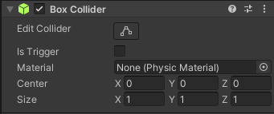
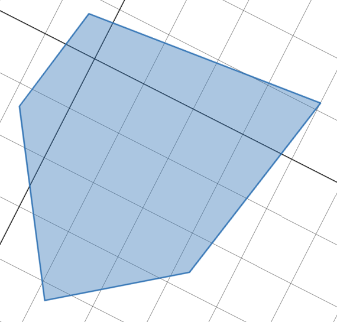
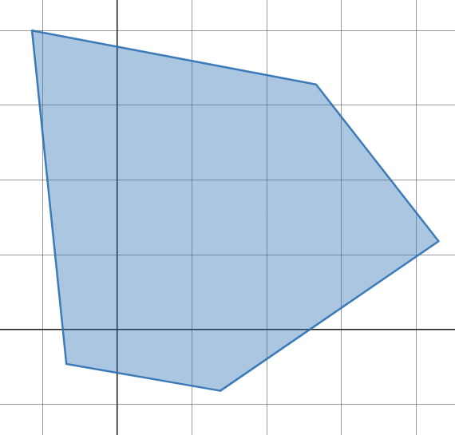
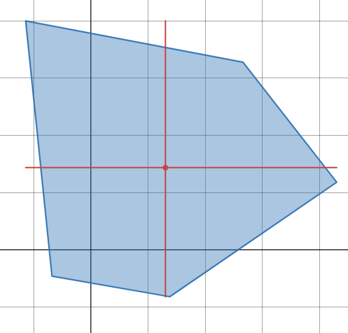
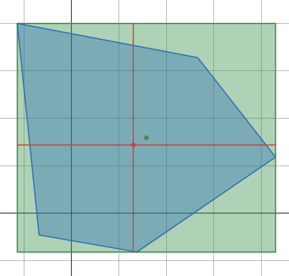
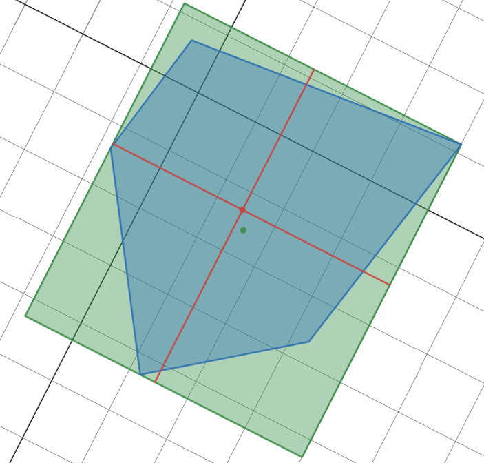

When I began working with the Unity game engine, I almost immediately came across a few roadblocks. One of them being that I found it difficult to create a collider for an object that is not a simple cube or cylinder. This is what sparked the idea for this project: a tool that could create a simple box collider around any 3d model.
This tool adds a button labeled "auto" at the bottom of the box collider inspector. All that is needed to use this tool is to select a single object, add a box collider component (if the object does not already have one you'd like to use), and click the "auto" button.

To help visualize how this tool works, we'll move down a dimension to 2d. The Auto Box Collider Tool works by first temporarily undoing all rotations done to the object. This will make it so that it can do calculations on the main x, y, and z axes.
 Then, it finds the farthest points away from the center of the object in each of the 6 directions: positive x, negative x, positive y, negative y, positive z, and negative z.
It uses those points to calculate the center and size of the box collider.
Finally, it returns the object to its original rotation.
